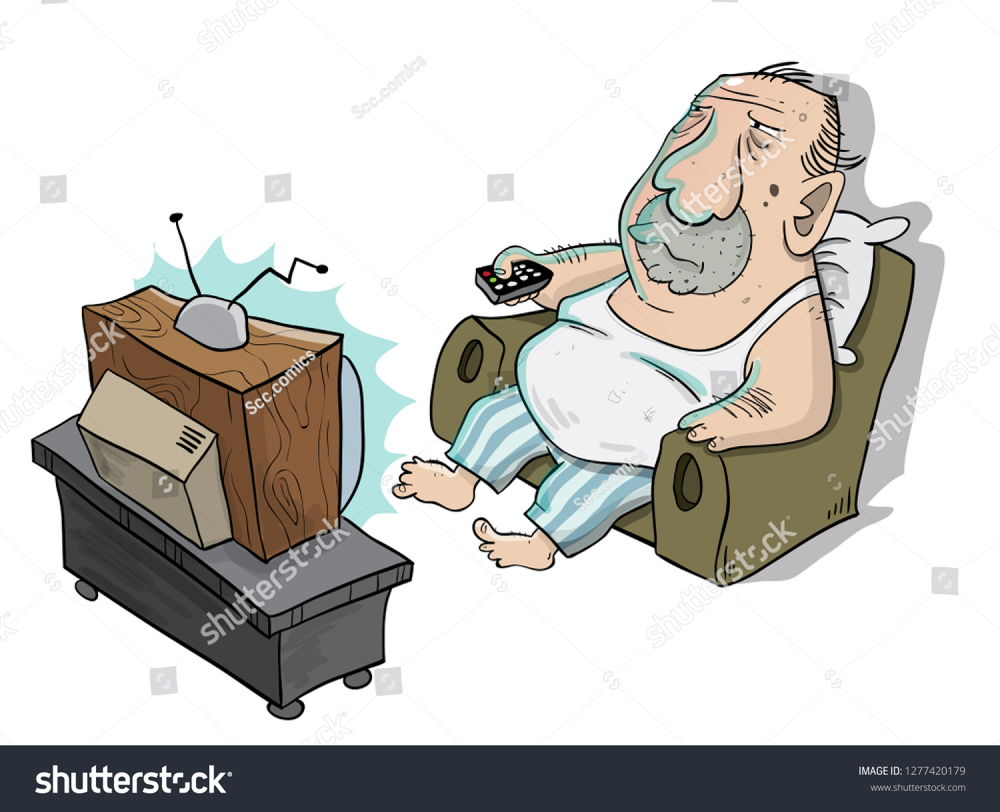

After his descension from the throne of Lord of the Shovels, Oliver Giron set out upon a quest: He was going to make money independently. After months of fruitless dropshipping and affiliate marketing attempts, he receded into a secluded mountain cave, where he meditated for many months. When he emerged, the masses begged him for his revelation. He left them with these simple words: "I don't really want money that bad anyway."
Hobbies
Eating
Breathing
Eating more

My rendition of the chorus of Baby Come Back by Player